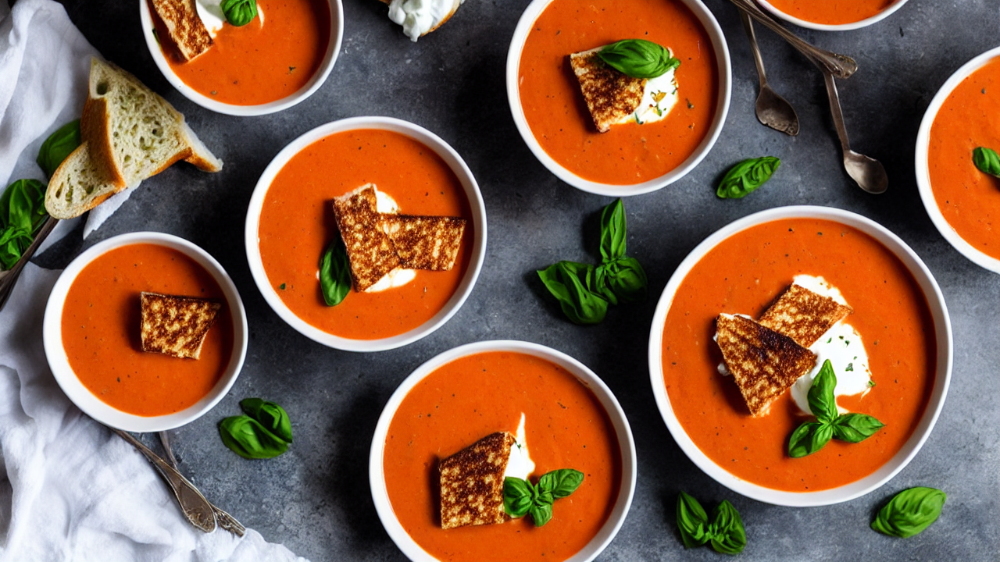
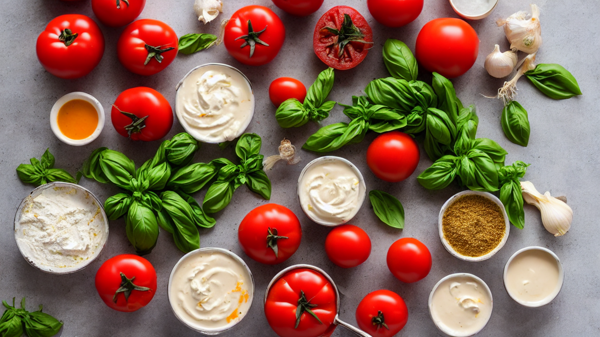
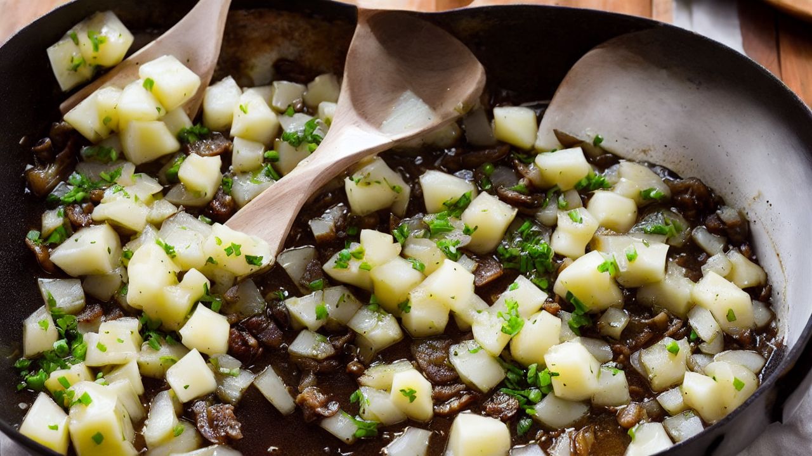
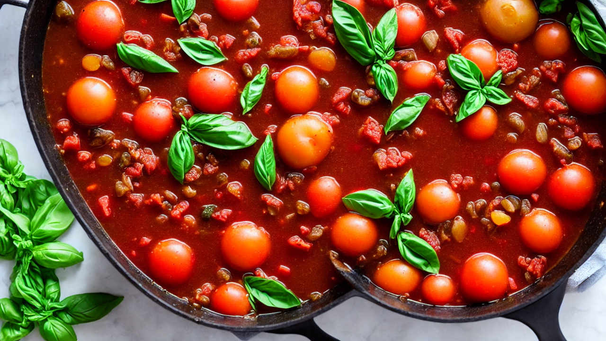
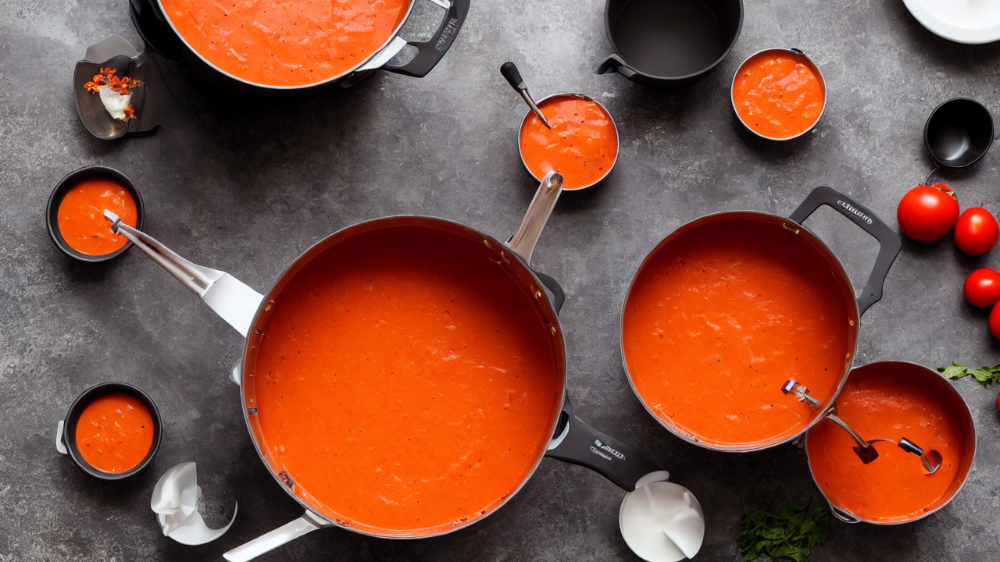
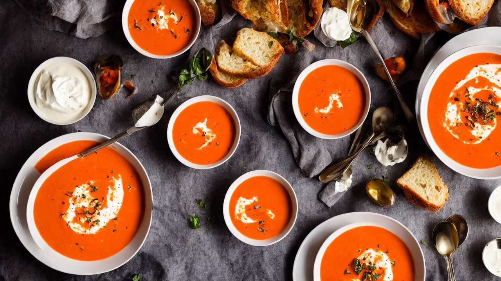
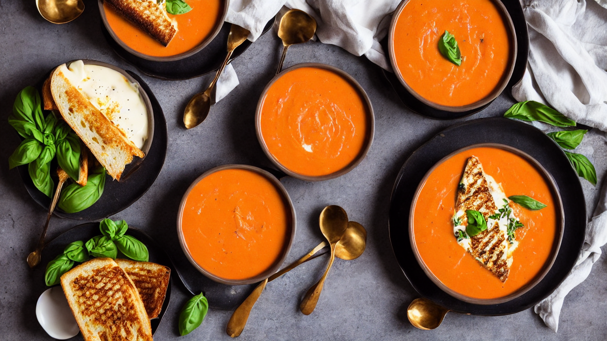

Creamy Tomato Soup | Better Than Campbell's Homemade Recipe
Rich and velvety Creamy Tomato Soup made from scratch in 30 minutes. Roasted tomatoes, fresh basil, and cream blended into the most comforting soup you'll ever taste. Pairs perfectly with grilled cheese!
Ingredients
- 2 cans of San Marzano tomatoes
- 1 large onion
- 4 cloves garlic
- 2 cups chicken or vegetable broth
- half cup heavy cream
- 2 tablespoons butter
- fresh basil
- sugar
- salt and pepper
Instructions

This Creamy Tomato Soup is rich, velvety, and miles better than anything from a can. Made with real tomatoes and fresh basil, it's pure comfort in a bowl. Let's make it from scratch.

You'll need: 2 cans of San Marzano tomatoes, 1 large onion, 4 cloves garlic, 2 cups chicken or vegetable broth, half cup heavy cream, 2 tablespoons butter, fresh basil, sugar, salt and pepper.

Melt butter in a large pot over medium heat. Add diced onion and cook for 5 minutes until soft and translucent. Add minced garlic and cook for another minute until fragrant.

Add the San Marzano tomatoes with their juices, chicken broth, a pinch of sugar, and a handful of fresh basil leaves. Bring everything to a boil, then simmer for 15 minutes.

Use an immersion blender to puree the soup until completely smooth. If you don't have one, carefully transfer to a regular blender in batches. The texture should be like silk.

Stir in the heavy cream until the soup turns a beautiful creamy orange color. Season with salt and pepper to taste. The cream makes it luxuriously rich and smooth.

Ladle into bowls, add a swirl of cream, and top with fresh basil. Serve with the crispiest grilled cheese sandwich. This is the ultimate comfort food combination that never gets old.